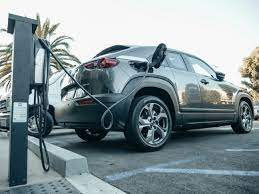
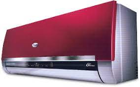

Laptop Description
A bad laptop is a device that is no longer functional, and it is important to recycle it properly to prevent
harmful substances from leaking into the environment.
Useful Products
- Hard Drive: The hard drive can be used to store data on another computer.
- RAM: The RAM can be used to upgrade the memory of another computer.
- Battery: The battery can be used to power other devices, such as a smartphone or a drone.
Harmful Products
- Liquid Cooling System: The liquid cooling system contains harmful substances, such as coolant and
antifreeze, which can be harmful to the environment if not disposed of properly.
- Electronic Components: The electronic components of a bad laptop, such as the motherboard and the power
supply, can contain harmful substances, such as lead and mercury, which can be harmful to the
environment if not disposed of properly.
Recycling Methods
- E-Waste Recycling: E-waste recycling involves the proper disposal of electronic waste, such as bad
laptops, in an authorized facility that can safely disassemble and recycle the components of the laptop.
- Donation to Charity: You can donate your bad laptop to a charity organization that specializes in
recycling electronic waste. These organizations will properly disassemble and recycle the components of
the laptop.
Electric Vehicle description

Some parts of a broken electric vehicle that are still working
- The battery
- The motor
- The wheels
- The brakes
- The steering wheel
Here are the parts of a broken electric vehicle that are harmful:
- The battery
- The motor
- The electrical components
Here are the parts of a broken electric vehicle that are useful:
- The metal
- The plastic
- The glass
Here are the methods through which an electric vehicle can be recycled:
- The battery can be recycled.
- The motor can be recycled.
- The electrical components can be recycled.
- The metal can be recycled.
- The plastic can be recycled.
- The glass can be recycled.
Air Conditioner Description

Here are the parts of a broken air conditioner that are still working:
The compressor
The condenser
The evaporator
The expansion valve
The fan
Here are the parts of a broken air conditioner that are harmful:
- The refrigerant
- The oil
- The electrical components
Here are the parts of a broken air conditioner that are useful:
- The metal
- The plastic
- The glass
Here are the methods through which an air conditioner can be recycled:
- The refrigerant can be recovered and reused.
- The oil can be recycled.
- The electrical components can be recycled.
- The metal can be recycled.
- The plastic can be recycled.
- The glass can be recycled.